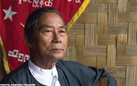
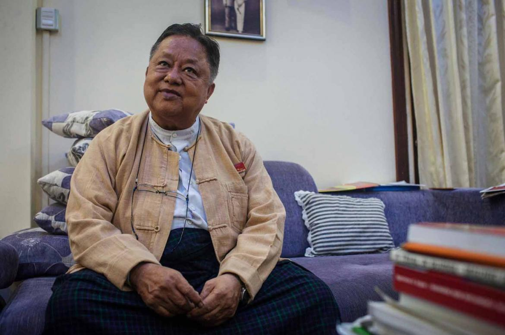
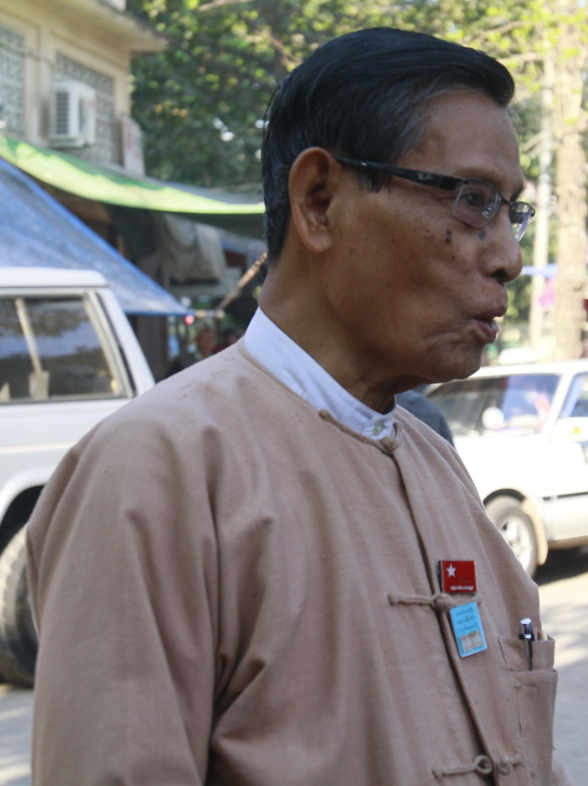
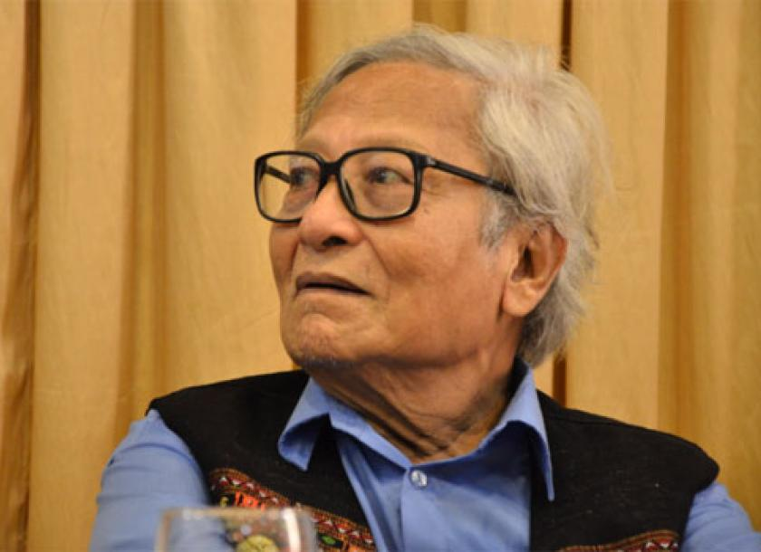
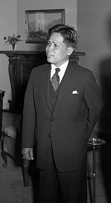
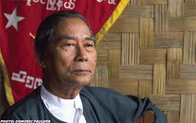
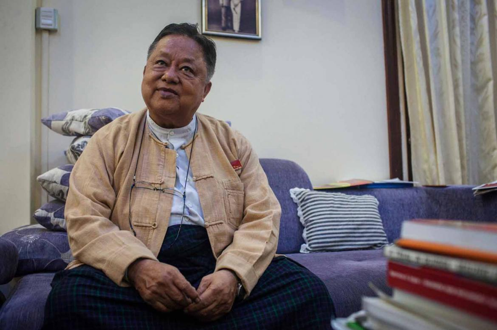
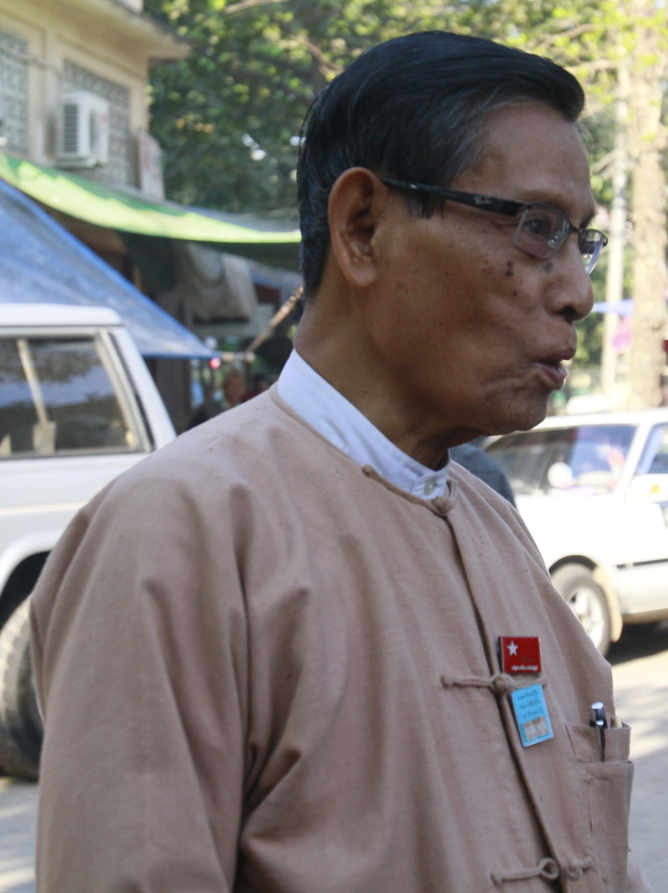
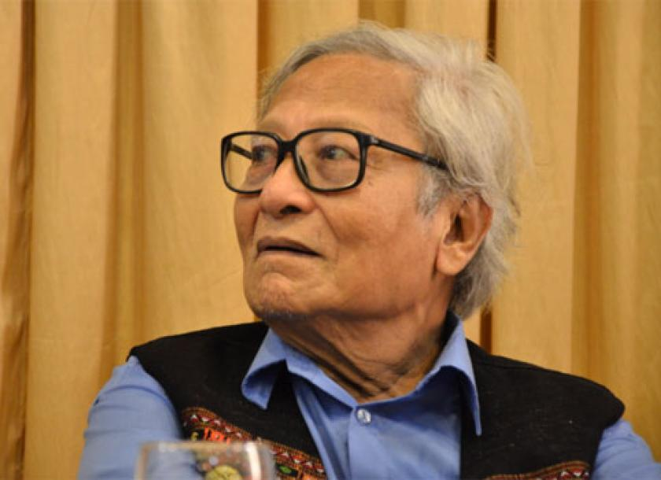
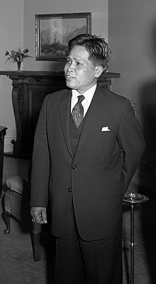

The NLD was formed in the aftermath of the 8888 Uprising, a series of protests in favour of democracy which took place in 1990 and was ended when the military again took control of the country in a coup. It formed under the leadership of Aung San Suu Kyi, daughter of Aung San, a pivotal figure in the Burmese independence movement of the 1940s. She was recruited by concerned democracy advocates.[citation needed] The first founding chair is Bridger General Aung Gyi and Aung San Suu Kyi is the General Secreatry of the Party.
In the 1990 parliamentary elections, the party took 59% of the vote and won 392 out of 492 contested seats, compared to 10 seats won by the governing National Unity Party.[12] However, the ruling military junta (formerly SLORC, later known as the State Peace and Development Council or SPDC) did not let the party form a government.[13] Soon after the election, the party was repressed and in 1996 Suu Kyi was placed under house arrest. This was her status for 16 of the following...
See More....
21 years until her release on 13 November 2010. A number of senior NLD members escaped arrest, however, and formed the National Coalition Government of the Union of Burma (NCGUB).
In 2001, the government permitted NLD office branches to re-open throughout Burma and freed some imprisoned members.[14] In May 2002, NLD's general secretary, Aung San Suu Kyi was again released from house arrest. She and other NLD members made numerous trips throughout the country and received support from the public. However, on their trip to Depayin township in May 2003, dozens of NLD members were shot and killed in a military sponsored massacre. Its general secretary, Aung San Suu Kyi and Party's Vice President, U Tin Oo were again arrested.[15]
From 2004, the government prohibited the activities of the party. In 2006, many members resigned from NLD, citing harassment and pressure from the Tatmadaw (Armed Forces) and the Union Solidarity and Development Association. In October 2008, following the crackdown on the aftermath of the Saffron Revolution a bomb exploded in the Htan Chauk Pin quarter of the Shwepyitha Township of Yangon, near the office of the military junta-backed Union Solidarity and Development Association killing one.[16] The victim was identified as Thet Oo Win, a former Buddhist monk who participated in the Saffron Revolution, was killed while improvising the bomb at his own residence.[17] The junta blamed the National League for Democracy party of planting that bomb, but experts believed at the time that the opposition was not in a position to carry out such acts amidst the tightly controlled security environment.[17] The junta detained several members of the party in connection with the bombings that year.[18]
The NLD boycotted the general election held in November 2010 because many of its most prominent members were barred from standing. The laws were written in such a way that the party would have had to expel these members to be allowed to run. This decision, taken in May, led to the party being officially banned.[8] A splinter group named the National Democratic Force broke away from the NLD to contest the elections,[19] but secured less than 3% of the vote. The election was won in a landslide by the military-backed USDP and was described by U.S. President Barack Obama as "stolen".[20]
Discussions were held between Suu Kyi and the Burmese government during 2011, which led to a number of official gestures to meet her demands. In October, around a tenth of Myanmar's political prisoners were freed in an amnesty and trade unions were legalised.
Hide...
 








